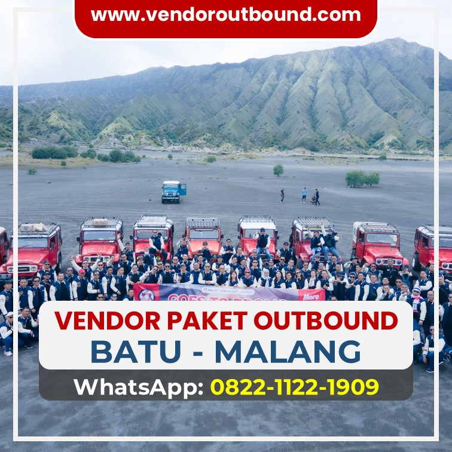

.JPG)
Prosesi ritual pengecekan alat keselamatan oleh sang kapten instruktur Gemilang Katun sebelum memberangkatkan konvoi ke rimba lepas.
Merancang sebuah rekreasi yang dihiasi elemen-elemen ekstrem ala pemecah bahaya bukan lantas diartikan berpasrah penuh pada ketidakpastian. Justru sangat sebaliknya! Olahraga rintangan sejenis offroad mematok kedisiplinan berlevelkan militer alias tingkat dewa dalam mematuhi serangkaian Standard Operasional Procedure (SOP) keselamatan dasar. Di pangkalan armada Gemilang Katun, kami mengukir kuat kredo 'Safety is Number First, Fun comes Second'.
Apa gunanya panorama pegunungan nan asri manakala harus dibayar mahal oleh celaka ringan tergeliat engsel, bukan? Agar tak mendapati kisah traumatik semacam itu, setiap calon turis alam harus membumikan dirinya seraya mengindahkan sederet larangan emas berikut.
Bobot Pentingnya Memperhatikan Briefing Keselamatan Pagi Buta (The Safety Brief)
Sebelum mesin mobil berkapasitas ribuan CC dihidupkan dengan raungan bisingnya, seluruh gerombolan peserta diwajibkan menyimak dan mengikuti tanpa tapi sesi ceramah singkat *safety briefing*. Sesi berdurasi sepuluh menit yang dihelat sang komandan tur kami ini meliputi: tata cara memasangkan sabuk pengaman empat titik yang terkadang berbeda dari sabuk mobil biasa umum, prosedur mengunci pegangan tangan di *roll-bar* besi kerangka penahan, hingga pemahaman letak alat pemadam api ringan (APAR).
Simak Juga Rekomendasi Kami:
1. Anatomi Posisi Duduk Teraman Menahan Guncangan
Selama gerbong baja 4x4 menerjang dan merayap melewati bongkahan batu besar seukuran mesin cuci, penumpang *haram hukumnya* mengeluarkan sembarang anggota badan keluar jendela bingkai Jeep. Menyodorkan tangan untuk memvideokan ponsel ke tepi tebing sangatlah dilarang keras. Jika saja sasis mobil merapat memepet ke dahan pohon ek besar sewaktu tergelincir miring, tekanan himpitannya mampu mematahkan anggota tubuh seketika.
"Aturan kaku komando instruktur bukanlah diciptakan guna memadamkan semangat keseruan Anda. Melainkan semata untuk meyakinkan betapa lepasnya setiap seru tawa rute hari ini mampu diputar menjadi nostalgia di masa kelak tanpa penyesalan cacat." – Adiel Ebert Nakula Shandy
2. Protokol Dilarang Bermain 'Lompatan Spontan' Saat Mobil Menggelinding atau Berhenti Menanjak
Sewajarnya gerbong convoy akan tersendat atau mendadak mengerem pas di tengah kecuraman rute menanjak lantaran sang sopir navigator butuh mengkalibrasi jarak roda (*blind crest spotting*). Tatkala momentum mandek itu, janganlah nekat sok inisiatif menyela turun meninggalkan kursi andai tanpa disuruh spesifik oleh komando mekanik kami! Merubah titik beban drastis saat as roda belakang dilingkupi tanah basah justru mengundang katastrofe mobil miring terguling bebas.

3. Resep Mental: Jangan Sembarang Panik Andai Kendaraan 'Stuck'
Terkunci di tengah jebakan bubur sedalam lutut roda seakan sudah menjadi tradisi komedi dari wisata kubangan. Selaku penumpang awam, menanggapi selip dengan histeria membabibuta tak akan merubah keadaan. Serahkan keahlian 'Recovery' (penyelamatan tarik lepas) ke *Recovery Team* berpengalaman kami. Para pria mekanik kami terlatih merajut temali kinetik elastis (*Snatch Winch Strap*) yang bisa menyeret Jeep seberat 2 ton. Anda cukup bersandar tenang di jok sembari melihat tontonan fisika langka itu.

Keseruan asik saling mengabadikan momen tawa lebar di tengah curamnya perjalanan, semuanya berkat jaminan ketenangan armada prima kami.
Kesimpulan Memperkokoh Keyakinan
Offroad mengajarkan falsafah kehidupan pada kita semua betapa tipisnya benang batas keseimbangan fana; yakni antara kobaran jiwa keberanian membara dan teguran peringatan kematian. Menyalurkan hobi dengan menggandeng event organizer EO penyedia layanan sekaliber Gemilang Katun Outbound—yang berbekal zero accident record track—adalah keharusan logis. Biarlah mekanik kami yang meramu keamanan di balik layar, agar Anda 100 persen cukup bersukahati mendedikasikan panca indera hanya demi menumpas batas nyali Anda.
FAQ Singkat Ruang Konsultasi Medis

.JPG)
.JPG)
.JPG)